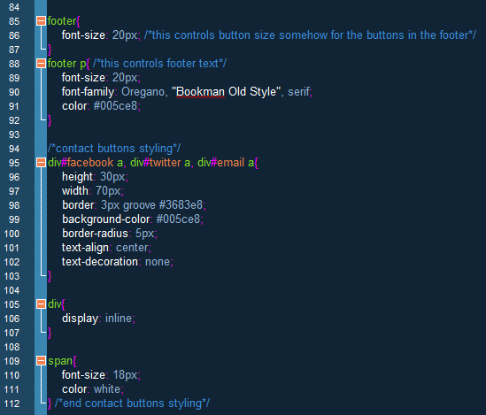

So far, I have been very consistent in keeping the content of my portfolio website separate from the presentation. Using CodePen.io, I have been able to draft and structure my content in HTML, while concurrently designing the presentation in CSS. If something was not looking the way I wanted, I could adjust the CSS accordingly, but if something was clearly not working, I had the CSS and HTML code side-by-side for easy review. If I wanted to style a specific portion of content, I utilized classes and ids in HTML so that I could continue to design the presentation in CSS. One presentation piece that I do have to keep in my HTML is the Google font, Oregano, that I selected to use for my portfolio’s headers. The code is very similar to the code used to refer to the CSS sheet, and is located within the "head" tag
The "head" HTML as shown in notepad++ that displays the code for the Google font, Oregano.
Most of my difficulties have stemmed from trying to position content in certain ways. For the most part I have been able to figure out ways to achieve the look I’m aiming for, but a few things have escaped me. One main example that is currently obvious when viewing my page is my footer content. The entire footer should be in a horizontal line, but I have been unsuccessful in using CSS to display the footer in a line. Rather than playing around with the HTML, I have just left everything alone. My hope is that the positioning lessons in Codeacademy will clear up my confusion about positioning, and then I can use the skills I learn to style the footer, and whatever of the presentation remains unfinished.

The "footer" HTML (right) and CSS (left) as shown in notepad++.
The "footer" as it appeared on my portfolio website as of March 18, 2014.
Moving forward, I will be using notepad++ to manage my HTML and CSS files for my portfolio, but I will still be referring back to CodePen.io if I am playing around with a certain area or trying to test out different looks. This way, I can have a live website, while still update the code with presentation separate from content.